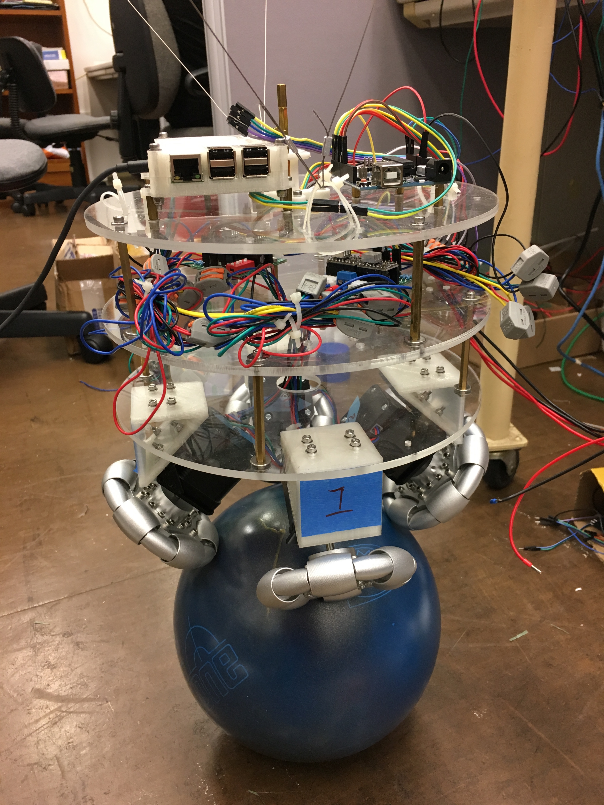

Welcome to Qiubot's Playground!
This is an open-source project for building a robot from the Ballbot family. We would document our component choices, mechanical designs, assembly instructions and also our working progress here. Feel free to give us feedback and help to improve the project!

Qiubot 2.0!
We are excited to announce that Qiubot has been upgraded to version 2.0! As suggested by Professor Masaaki KUMAGAI, we are now using four all-metal omniwheels to achieve smoother motion. We are also using a kalman-filter-based fusion algorithm to process the IMU data instead of using the DMP data from MPU6050. Moreovre, the bowling ball is now rubber-coated to increase the friction between wheels and the ball.
Qiubot's debut
A bit on the Creators
In the summer of 2016, Cao Chao (@caochao39) and Sun Bacon (@BaconSun) started this project for personal interest. The project is funded by Computer Science Department, University of Hong Kong. Please feel free to give them a hand and donate to the funding:) All donors would be invited to play with Qiubot as soon as it is built.
Acknowledgement
The development of Qiubot was inspired by other Ballbot projects such as BallIP CMU Ballbot and Rezero.
We would like to thank Professor Masaaki KUMAGAI, Dr. Robert C. Roberts, Dr. Y.K. Choi and David C.M. Lee for their advice and support.